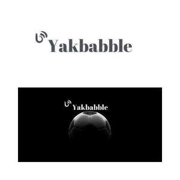

Trade Mark Journal No.2025/012 21 March 2025
UK00004155056 2 February 2025 (35,41)

- Class 35
- Providing business information via a web site; Compilation of advertisements for use as web pages on the Internet; Compilation of advertisements for use on internet web pages; Blogger outreach services; Composing advertisements for use as web pages; Compilation of advertisements for use as web pages; Affiliate marketing; Consultancy services in the field of affiliate marketing; Referral marketing; Promotion, advertising and marketing of on-line websites; Promoting the goods and services of others by arranging for sponsors to affiliate their goods and services with awards programs; Online advertising network matching services for connecting advertisers to websites; Advertising, marketing and promotion services; Marketing, advertising and promotion services; On-line advertising and marketing services; Advertising, marketing and promotional services; Advertising, promotional and marketing services; Marketing, advertising, and promotional services; Advertising and marketing services provided by means of blogging; Promoting the goods and services of others by arranging for sponsors to affiliate their goods and services with sports competitions; Online marketing; Advertising and marketing; Advertising of business web sites; Advertising and marketing services; Promoting the goods and services of others by arranging for sponsors to affiliate their goods and services with sporting activities; Advertising services for the promotion of e-commerce; Advertising services provided by a radio and television advertising agency; Promotion [advertising] of business; Marketing; Influencer marketing; Organisation of customer loyalty programs for commercial, promotional or advertising purposes; Promotional marketing; Advertising and promotion services; Marketing agency services; Providing marketing information via websites; Online advertising; Banner advertising; Direct marketing services; Advertising and marketing services provided by means of social media; Marketing services; Arrangement of advertising.
- Class 41
- Television entertainment; Television and radio entertainment; Radio and television entertainment; Television entertainment services; Television and radio entertainment services; Radio and television entertainment services; Production of television entertainment programmes; Radio entertainment; Entertainment; Entertainment in the nature of television news shows; Production of live television programmes for entertainment; Production of television entertainment features; Tv entertainment services; Sports entertainment services; Cabaret entertainment services; Live entertainment; On-line entertainment; Booking of entertainment; Entertainment services in the nature of arranging social entertainment events; Live entertainment services; Corporate entertainment services; Popular entertainment services; Hospitality services (entertainment); Entertainment services in the nature of organizing social entertainment events; Corporate hospitality (entertainment); Provision of entertainment; Entertainment, sporting and cultural activities; Online entertainment services; Entertainment booking services; Provision of live entertainment; Production of live entertainment events; Internet radio entertainment services; Booking of entertainment halls; Entertainment agency services; Entertainment services relating to sport; Entertainment services relating to esports; Entertainment services in the form of television programmes; Entertainment services in the nature of interactive television programmes; Entertainment services in the nature of sporting events; Production of live entertainment features; Provision of entertainment services through the media of television; Road shows being entertainment services; Entertainment in the form of television programmes (Services providing -).
Claude David Jones